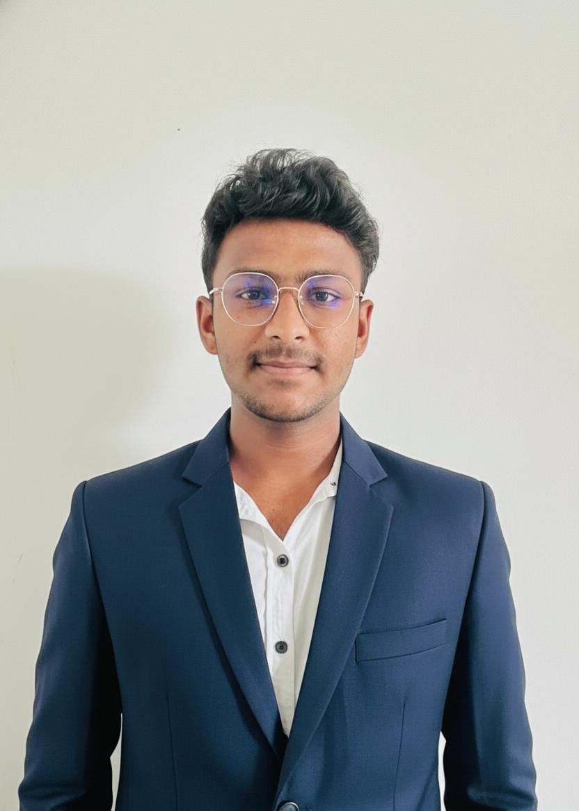

I am a

Hi, I'm Avishka, a passionate beginner Web Developer and a Software Engineering undergraduate at ESOFT. I love building clean, functional websites and managing data efficiently.
A professional responsive website created to showcase my skills and projects using HTML and CSS.
A web application built with Flask (Python) and MySQL database. It features task prioritization, deadline tracking, and a dynamic dashboard for efficient workflow management.
Email: kehanavishka@gmail.com
Phone: 075 457 7899 / 072 048 6055
Location: Pattiwila,Gonawala,Kelaniya